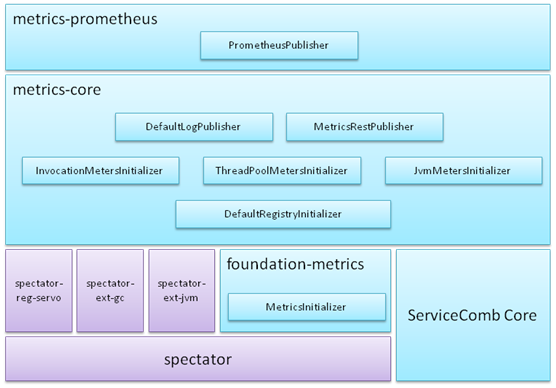

一、Metrics介绍

- 基于netflix spectator
- Foundation-metrics通过SPI机制加载所有MetricsInitializer实现，实现者可以通过MetricsInitializer中的getOrder规划执行顺序，order数字越小，越先执行。
- Metrics-core实现3类MetricsInitializer：
- DefaultRegistryInitializer: 实例化并注册spectator-reg-servo，设置较小的order，保证比下面2类MetricsInitializer先执行
- Meters Initializer: 实现TPS、时延、线程池、jvm资源等等数据的统计
- Publisher: 输出统计结果，内置了日志输出，以及通过RESTful接口输出
- Metrics-prometheus提供与prometheus对接的能力
二、使用方法
1.Maven依赖
<dependency>
<groupId>org.apache.servicecomb</groupId>
<artifactId>metrics-core</artifactId>
</dependency>
如果与prometheus集成，则还需要加入依赖
<dependency>
<groupId>org.apache.servicecomb</groupId>
<artifactId>metrics-prometheus</artifactId>
</dependency>
注：请将version字段修改为实际版本号；如果版本号已经在dependencyManagement中声明，则这里不必写版本号
2.配置说明
| 配置项 | 默认值 | 含义 |
|---|---|---|
| servicecomb.metrics.window_time | 60000 | 统计周期，单位为毫秒 TPS、时延等等周期性的数据，每周期更新一次，在周期内获取到的值，实际是上一周期的值 |
| servicecomb.metrics .invocation.latencyDistribution |
时延分布时间段定义，单位为毫秒 例如：0,1,10,100,1000 表示定义了下列时延段[0, 1),[1, 10),[10, 100),[100, 1000),[1000, ) |
|
| servicecomb.metrics .Consumer.invocation.slow.enabled |
false | 是否开启Consumer端的慢调用检测 通过增加后缀.${service}.${schema}.${operation}，可以支持4级优先级定义 |
| servicecomb.metrics .Consumer.invocation.slow.msTime |
1000 | 时延超过配置值，则会立即输出日志，记录本次调用的stage耗时信息 通过增加后缀.${service}.${schema}.${operation}，可以支持4级优先级定义 |
| servicecomb.metrics .Provider.invocation.slow.enabled |
false | 是否开启Provide端的慢调用检测 通过增加后缀.${service}.${schema}.${operation}，可以支持4级优先级定义 |
| servicecomb.metrics .Provider.invocation.slow.msTime |
1000 | 时延超过配置值，则会立即输出日志，记录本次调用的stage耗时信息 通过增加后缀.${service}.${schema}.${operation}，可以支持4级优先级定义 |
| servicecomb.metrics .prometheus.address |
0.0.0.0:9696 | prometheus监听地址 |
| servicecomb.metrics.publisher.defaultLog .enabled |
false | 是否输出默认的统计日志 |
| servicecomb.metrics.publisher.defaultLog .endpoints.client.detail.enabled |
false | 是否输出每一条client endpoint统计日志，因为跟目标的ip:port数有关，可能会有很多数据，所以默认不输出 |
3.慢调用检测
开启慢调用检测后，如果存在慢调用，则会立即输出相应日志：
2019-04-02 23:01:09,103\[WARN]\[pool-7-thread-74]\[5ca37935c00ff2c7-350076] - slow(40 ms) invocation, CONSUMER highway perf1.impl.syncQuery
http method: GET
url : /v1/syncQuery/{id}/
server : highway://192.168.0.152:7070?login=true
status code: 200
total : 50.760 ms
prepare : 0.0 ms
handlers request : 0.0 ms
client filters request : 0.0 ms
send request : 0.5 ms
get connection : 0.0 ms
write to buf : 0.5 ms
wait response : 50.727 ms
wake consumer : 0.23 ms
client filters response: 0.2 ms
handlers response : 0.0 ms (SlowInvocationLogger.java:121)
其中5ca37935c00ff2c7-350076是${traceId}-${invocationId}的结构，在log4j2或logback的输出格式中通过%marker引用
4.通过RESTful访问
只要微服务开放了rest端口，则使用浏览器访问http://ip:port/metrics 即可， 将会得到类似下面格式的json数据：
{
"servicecomb.vertx.endpoints(address=192.168.0.124:7070,statistic=connectCount,type=client)": 0.0,
"servicecomb.vertx.endpoints(address=192.168.0.124:7070,statistic=disconnectCount,type=client)": 0.0,
"servicecomb.vertx.endpoints(address=192.168.0.124:7070,statistic=connections,type=client)": 1.0,
"servicecomb.vertx.endpoints(address=192.168.0.124:7070,statistic=bytesRead,type=client)": 508011.0,
"servicecomb.vertx.endpoints(address=192.168.0.124:7070,statistic=bytesWritten,type=client)": 542163.0,
"servicecomb.vertx.endpoints(address=192.168.0.124:7070,statistic=queueCount,type=client)": 0.0,
"servicecomb.vertx.endpoints(address=0.0.0.0:7070,statistic=connectCount,type=server)": 0.0,
"servicecomb.vertx.endpoints(address=0.0.0.0:7070,statistic=disconnectCount,type=server)": 0.0,
"servicecomb.vertx.endpoints(address=0.0.0.0:7070,statistic=connections,type=server)": 1.0,
"servicecomb.vertx.endpoints(address=0.0.0.0:7070,statistic=bytesRead,type=server)": 542163.0,
"servicecomb.vertx.endpoints(address=0.0.0.0:7070,statistic=bytesWritten,type=server)": 508011.0,
"servicecomb.vertx.endpoints(address=0.0.0.0:7070,statistic=rejectByConnectionLimit,type=server)": 0.0,
"servicecomb.vertx.endpoints(address=localhost:8080,statistic=connectCount,type=server)": 0.0,
"servicecomb.vertx.endpoints(address=localhost:8080,statistic=disconnectCount,type=server)": 0.0,
"servicecomb.vertx.endpoints(address=localhost:8080,statistic=connections,type=server)": 0.0,
"servicecomb.vertx.endpoints(address=localhost:8080,statistic=bytesRead,type=server)": 0.0,
"servicecomb.vertx.endpoints(address=localhost:8080,statistic=bytesWritten,type=server)": 0.0,
"servicecomb.vertx.endpoints(address=localhost:8080,statistic=rejectByConnectionLimit,type=server)": 0.0,
"threadpool.completedTaskCount(id=cse.executor.groupThreadPool-group0)": 4320.0,
"threadpool.rejectedCount(id=cse.executor.groupThreadPool-group0)": 0.0,
"threadpool.taskCount(id=cse.executor.groupThreadPool-group0)": 4320.0,
"threadpool.currentThreadsBusy(id=cse.executor.groupThreadPool-group0)": 0.0,
"threadpool.poolSize(id=cse.executor.groupThreadPool-group0)": 4.0,
"threadpool.maxThreads(id=cse.executor.groupThreadPool-group0)": 10.0,
"threadpool.queueSize(id=cse.executor.groupThreadPool-group0)": 0.0,
"threadpool.corePoolSize(id=cse.executor.groupThreadPool-group0)": 4.0,
"servicecomb.invocation(operation=perf1.impl.syncQuery,role=CONSUMER,scope=[0,1),status=200,transport=highway,type=latencyDistribution)": 4269.0,
"servicecomb.invocation(operation=perf1.impl.syncQuery,role=CONSUMER,scope=[1,3),status=200,transport=highway,type=latencyDistribution)": 0.0,
"servicecomb.invocation(operation=perf1.impl.syncQuery,role=CONSUMER,scope=[3,10),status=200,transport=highway,type=latencyDistribution)": 0.0,
"servicecomb.invocation(operation=perf1.impl.syncQuery,role=CONSUMER,scope=[10,100),status=200,transport=highway,type=latencyDistribution)": 0.0,
"servicecomb.invocation(operation=perf1.impl.syncQuery,role=CONSUMER,scope=[100,),status=200,transport=highway,type=latencyDistribution)": 0.0,
"servicecomb.invocation(operation=perf1.impl.syncQuery,role=PRODUCER,scope=[0,1),status=200,transport=highway,type=latencyDistribution)": 4269.0,
"servicecomb.invocation(operation=perf1.impl.syncQuery,role=PRODUCER,scope=[1,3),status=200,transport=highway,type=latencyDistribution)": 0.0,
"servicecomb.invocation(operation=perf1.impl.syncQuery,role=PRODUCER,scope=[3,10),status=200,transport=highway,type=latencyDistribution)": 0.0,
"servicecomb.invocation(operation=perf1.impl.syncQuery,role=PRODUCER,scope=[10,100),status=200,transport=highway,type=latencyDistribution)": 0.0,
"servicecomb.invocation(operation=perf1.impl.syncQuery,role=PRODUCER,scope=[100,),status=200,transport=highway,type=latencyDistribution)": 0.0,
"servicecomb.invocation(operation=perf1.impl.syncQuery,role=PRODUCER,stage=total,statistic=count,status=200,transport=highway,type=stage)": 4269.0,
"servicecomb.invocation(operation=perf1.impl.syncQuery,role=PRODUCER,stage=total,statistic=totalTime,status=200,transport=highway,type=stage)": 0.25269420000000004,
"servicecomb.invocation(operation=perf1.impl.syncQuery,role=PRODUCER,stage=total,statistic=max,status=200,transport=highway,type=stage)": 2.7110000000000003E-4,
"servicecomb.invocation(operation=perf1.impl.syncQuery,role=PRODUCER,stage=handlers_request,statistic=count,status=200,transport=highway,type=stage)": 4269.0,
"servicecomb.invocation(operation=perf1.impl.syncQuery,role=PRODUCER,stage=handlers_request,statistic=totalTime,status=200,transport=highway,type=stage)": 0.0079627,
"servicecomb.invocation(operation=perf1.impl.syncQuery,role=PRODUCER,stage=handlers_request,statistic=max,status=200,transport=highway,type=stage)": 1.74E-5,
"servicecomb.invocation(operation=perf1.impl.syncQuery,role=PRODUCER,stage=handlers_response,statistic=count,status=200,transport=highway,type=stage)": 4269.0,
"servicecomb.invocation(operation=perf1.impl.syncQuery,role=PRODUCER,stage=handlers_response,statistic=totalTime,status=200,transport=highway,type=stage)": 0.0060666,
"servicecomb.invocation(operation=perf1.impl.syncQuery,role=PRODUCER,stage=handlers_response,statistic=max,status=200,transport=highway,type=stage)": 1.08E-5,
"servicecomb.invocation(operation=perf1.impl.syncQuery,role=PRODUCER,stage=prepare,statistic=count,status=200,transport=highway,type=stage)": 4269.0,
"servicecomb.invocation(operation=perf1.impl.syncQuery,role=PRODUCER,stage=prepare,statistic=totalTime,status=200,transport=highway,type=stage)": 0.016679600000000003,
"servicecomb.invocation(operation=perf1.impl.syncQuery,role=PRODUCER,stage=prepare,statistic=max,status=200,transport=highway,type=stage)": 2.68E-5,
"servicecomb.invocation(operation=perf1.impl.syncQuery,role=PRODUCER,stage=queue,statistic=count,status=200,transport=highway,type=stage)": 4269.0,
"servicecomb.invocation(operation=perf1.impl.syncQuery,role=PRODUCER,stage=queue,statistic=totalTime,status=200,transport=highway,type=stage)": 0.08155480000000001,
"servicecomb.invocation(operation=perf1.impl.syncQuery,role=PRODUCER,stage=queue,statistic=max,status=200,transport=highway,type=stage)": 2.1470000000000001E-4,
"servicecomb.invocation(operation=perf1.impl.syncQuery,role=PRODUCER,stage=execution,statistic=count,status=200,transport=highway,type=stage)": 4269.0,
"servicecomb.invocation(operation=perf1.impl.syncQuery,role=PRODUCER,stage=execution,statistic=totalTime,status=200,transport=highway,type=stage)": 0.0098285,
"servicecomb.invocation(operation=perf1.impl.syncQuery,role=PRODUCER,stage=execution,statistic=max,status=200,transport=highway,type=stage)": 4.3100000000000004E-5,
"servicecomb.invocation(operation=perf1.impl.syncQuery,role=PRODUCER,stage=server_filters_request,statistic=count,status=200,transport=highway,type=stage)": 4269.0,
"servicecomb.invocation(operation=perf1.impl.syncQuery,role=PRODUCER,stage=server_filters_request,statistic=totalTime,status=200,transport=highway,type=stage)": 0.0170669,
"servicecomb.invocation(operation=perf1.impl.syncQuery,role=PRODUCER,stage=server_filters_request,statistic=max,status=200,transport=highway,type=stage)": 3.6400000000000004E-5,
"servicecomb.invocation(operation=perf1.impl.syncQuery,role=PRODUCER,stage=server_filters_response,statistic=count,status=200,transport=highway,type=stage)": 4269.0,
"servicecomb.invocation(operation=perf1.impl.syncQuery,role=PRODUCER,stage=server_filters_response,statistic=totalTime,status=200,transport=highway,type=stage)": 0.0196985,
"servicecomb.invocation(operation=perf1.impl.syncQuery,role=PRODUCER,stage=server_filters_response,statistic=max,status=200,transport=highway,type=stage)": 4.8100000000000004E-5,
"servicecomb.invocation(operation=perf1.impl.syncQuery,role=PRODUCER,stage=producer_send_response,statistic=count,status=200,transport=highway,type=stage)": 4269.0,
"servicecomb.invocation(operation=perf1.impl.syncQuery,role=PRODUCER,stage=producer_send_response,statistic=totalTime,status=200,transport=highway,type=stage)": 0.0880885,
"servicecomb.invocation(operation=perf1.impl.syncQuery,role=PRODUCER,stage=producer_send_response,statistic=max,status=200,transport=highway,type=stage)": 1.049E-4,
"servicecomb.invocation(operation=perf1.impl.syncQuery,role=CONSUMER,stage=total,statistic=count,status=200,transport=highway,type=stage)": 4269.0,
"servicecomb.invocation(operation=perf1.impl.syncQuery,role=CONSUMER,stage=total,statistic=totalTime,status=200,transport=highway,type=stage)": 0.9796976000000001,
"servicecomb.invocation(operation=perf1.impl.syncQuery,role=CONSUMER,stage=total,statistic=max,status=200,transport=highway,type=stage)": 6.720000000000001E-4,
"servicecomb.invocation(operation=perf1.impl.syncQuery,role=CONSUMER,stage=handlers_request,statistic=count,status=200,transport=highway,type=stage)": 4269.0,
"servicecomb.invocation(operation=perf1.impl.syncQuery,role=CONSUMER,stage=handlers_request,statistic=totalTime,status=200,transport=highway,type=stage)": 0.012601500000000002,
"servicecomb.invocation(operation=perf1.impl.syncQuery,role=CONSUMER,stage=handlers_request,statistic=max,status=200,transport=highway,type=stage)": 3.5000000000000004E-5,
"servicecomb.invocation(operation=perf1.impl.syncQuery,role=CONSUMER,stage=handlers_response,statistic=count,status=200,transport=highway,type=stage)": 4269.0,
"servicecomb.invocation(operation=perf1.impl.syncQuery,role=CONSUMER,stage=handlers_response,statistic=totalTime,status=200,transport=highway,type=stage)": 0.0066785,
"servicecomb.invocation(operation=perf1.impl.syncQuery,role=CONSUMER,stage=handlers_response,statistic=max,status=200,transport=highway,type=stage)": 3.21E-5,
"servicecomb.invocation(operation=perf1.impl.syncQuery,role=CONSUMER,stage=prepare,statistic=count,status=200,transport=highway,type=stage)": 4269.0,
"servicecomb.invocation(operation=perf1.impl.syncQuery,role=CONSUMER,stage=prepare,statistic=totalTime,status=200,transport=highway,type=stage)": 0.010363800000000001,
"servicecomb.invocation(operation=perf1.impl.syncQuery,role=CONSUMER,stage=prepare,statistic=max,status=200,transport=highway,type=stage)": 2.85E-5,
"servicecomb.invocation(operation=perf1.impl.syncQuery,role=CONSUMER,stage=client_filters_request,statistic=count,status=200,transport=highway,type=stage)": 4269.0,
"servicecomb.invocation(operation=perf1.impl.syncQuery,role=CONSUMER,stage=client_filters_request,statistic=totalTime,status=200,transport=highway,type=stage)": 0.0060282,
"servicecomb.invocation(operation=perf1.impl.syncQuery,role=CONSUMER,stage=client_filters_request,statistic=max,status=200,transport=highway,type=stage)": 9.2E-6,
"servicecomb.invocation(operation=perf1.impl.syncQuery,role=CONSUMER,stage=consumer_send_request,statistic=count,status=200,transport=highway,type=stage)": 4269.0,
"servicecomb.invocation(operation=perf1.impl.syncQuery,role=CONSUMER,stage=consumer_send_request,statistic=totalTime,status=200,transport=highway,type=stage)": 0.099984,
"servicecomb.invocation(operation=perf1.impl.syncQuery,role=CONSUMER,stage=consumer_send_request,statistic=max,status=200,transport=highway,type=stage)": 1.1740000000000001E-4,
"servicecomb.invocation(operation=perf1.impl.syncQuery,role=CONSUMER,stage=consumer_get_connection,statistic=count,status=200,transport=highway,type=stage)": 4269.0,
"servicecomb.invocation(operation=perf1.impl.syncQuery,role=CONSUMER,stage=consumer_get_connection,statistic=totalTime,status=200,transport=highway,type=stage)": 0.006916800000000001,
"servicecomb.invocation(operation=perf1.impl.syncQuery,role=CONSUMER,stage=consumer_get_connection,statistic=max,status=200,transport=highway,type=stage)": 5.83E-5,
"servicecomb.invocation(operation=perf1.impl.syncQuery,role=CONSUMER,stage=consumer_write_to_buf,statistic=count,status=200,transport=highway,type=stage)": 4269.0,
"servicecomb.invocation(operation=perf1.impl.syncQuery,role=CONSUMER,stage=consumer_write_to_buf,statistic=totalTime,status=200,transport=highway,type=stage)": 0.0930672,
"servicecomb.invocation(operation=perf1.impl.syncQuery,role=CONSUMER,stage=consumer_write_to_buf,statistic=max,status=200,transport=highway,type=stage)": 1.1580000000000001E-4,
"servicecomb.invocation(operation=perf1.impl.syncQuery,role=CONSUMER,stage=consumer_wait_response,statistic=count,status=200,transport=highway,type=stage)": 4269.0,
"servicecomb.invocation(operation=perf1.impl.syncQuery,role=CONSUMER,stage=consumer_wait_response,statistic=totalTime,status=200,transport=highway,type=stage)": 0.7654931,
"servicecomb.invocation(operation=perf1.impl.syncQuery,role=CONSUMER,stage=consumer_wait_response,statistic=max,status=200,transport=highway,type=stage)": 5.547E-4,
"servicecomb.invocation(operation=perf1.impl.syncQuery,role=CONSUMER,stage=consumer_wake_consumer,statistic=count,status=200,transport=highway,type=stage)": 4269.0,
"servicecomb.invocation(operation=perf1.impl.syncQuery,role=CONSUMER,stage=consumer_wake_consumer,statistic=totalTime,status=200,transport=highway,type=stage)": 0.0502085,
"servicecomb.invocation(operation=perf1.impl.syncQuery,role=CONSUMER,stage=consumer_wake_consumer,statistic=max,status=200,transport=highway,type=stage)": 3.7370000000000003E-4,
"servicecomb.invocation(operation=perf1.impl.syncQuery,role=CONSUMER,stage=client_filters_response,statistic=count,status=200,transport=highway,type=stage)": 4269.0,
"servicecomb.invocation(operation=perf1.impl.syncQuery,role=CONSUMER,stage=client_filters_response,statistic=totalTime,status=200,transport=highway,type=stage)": 0.0227188,
"servicecomb.invocation(operation=perf1.impl.syncQuery,role=CONSUMER,stage=client_filters_response,statistic=max,status=200,transport=highway,type=stage)": 4.0E-5
}
三、统计项汇总
1. CPU
| Name | Tag keys | Tag values | 含义 |
|---|---|---|---|
| os | type | cpu | 当前周期内系统CPU使用率，Solaris模式 |
| processCpu | 当前周期内微服务进程CPU使用率，IRIX模式 processCpu除以cpu近似等于系统CPU数 |
2. NET
| Name | Tag keys | Tag values | 含义 |
|---|---|---|---|
| os | type | net | |
| statistic | send | 当前周期内平均每秒发送的字节数(Bps) | |
| receive | 当前周期内平均每秒接收的字节数(Bps) | ||
| sendPackets | 当前周期内平均每秒发送的包数(pps) | ||
| receivePackets | 当前周期内平均每秒接收的包数(pps) | ||
| interface | 网卡设备名 |
3. vertx client endpoints
| Name | Tag keys | Tag values | 含义 |
|---|---|---|---|
| servicecomb .vertx .endpoints |
type | client | |
| address | ${ip}:${port} | 服务端的ip:port | |
| statistic | connectCount | 当前周期内共发起多少次连接 | |
| disconnectCount | 当前周期内断连的次数 | ||
| queueCount | http连接池中正在等待获取连接的请求数 | ||
| connections | 当前时刻的连接数 | ||
| bytesRead | 当前周期内平均每秒发送的字节数(Bps) 业务层的统计，相对从网卡获取的数据，这里的数据不包括包头的大小 对于http消息，不包括http header大小 |
||
| bytesWritten | 当前周期内平均每秒接收的字节数(Bps) 业务层的统计，相对从网卡获取的数据，这里的数据不包括包头的大小 对于http消息，不包括http header大小 |
4. vertx server endpoints
| Name | Tag keys | Tag values | 含义 |
|---|---|---|---|
| servicecomb .vertx .endpoints |
type | server | |
| address | ${ip}:${port} | 监听的ip:port | |
| statistic | connectCount | 当前周期内共接入多少次连接 | |
| disconnectCount | 当前周期内断连的次数 | ||
| rejectByConnectionLimit | 当前周期内因超出连接数限制而主动断连的次数 | ||
| connections | 当前时刻的连接数 | ||
| bytesRead | 当前周期内平均每秒发送的字节数(Bps) 业务层的统计，相对从网卡获取的数据，这里的数据不包括包头的大小 对于http消息，不包括http header大小 |
||
| bytesWritten | 当前周期内平均每秒接收的字节数(Bps) 业务层的统计，相对从网卡获取的数据，这里的数据不包括包头的大小 对于http消息，不包括http header大小 |
5. invocation 时延分布
| Name | Tag keys | Tag values | 含义 |
|---|---|---|---|
| servicecomb .invocation |
role | CONSUMER、PRODUCER、EDGE | 是CONSUMER、PRODUCER还是EDGE端的统计 |
| operation | ${microserviceName} .${schemaId} .${operationName} |
调用的方法名 | |
| transport | highway或rest | 调用是在哪个传输通道上发生的 | |
| status | http status code | ||
| type | latencyDistribution | 调用时延分布 | |
| scope | [${min}, ${max}) | 当前周期内调用时延大于等于min，小于max的次数 [${min},)表示max为无限大 |
6. invocation consumer stage时延
| Name | Tag keys | Tag values | 含义 |
|---|---|---|---|
| servicecomb .invocation |
role | CONSUMER | CONSUMER端的统计 |
| operation | ${microserviceName} .${schemaId} .${operationName} |
调用的方法名 | |
| transport | highway或rest | 调用是在哪个传输通道上发生的 | |
| status | http status code | ||
| type | stage | stage时延 | |
| stage | total | 全流程 | |
| prepare | 初始化 | ||
| handlers_request | handler链请求流程 | ||
| client_filters_request | http client filter链请求流程 只有走rest transport才有本阶段 |
||
| consumer_send_request | 发送请求阶段，包括consumer_get_connection和consumer_write_to_buf | ||
| consumer_get_connection | 从连接池获取连接 | ||
| consumer_write_to_buf | 向网络缓冲区写数据 | ||
| consumer_wait_response | 等待服务端应答 | ||
| consumer_wake_consumer | 同步流程中，收到应答后，从唤醒等待线程，到等待线程开始处理应答的耗时 | ||
| client_filters_response | http client filter链应答流程 | ||
| handlers_response | handler链应答流程 | ||
| statistic | count | 平均每秒调用次数，即TPS count=统计周期内的调用次数/周期（秒） |
|
| totalTime | 单位为秒 totalTime=当前周期内的调用耗时总时长/周期（秒） totalTime除以count即可得到平均时延 |
||
| max | 单位为秒 当前周期内最大耗时 |
7. invocation producer stage时延
| Name | Tag keys | Tag values | 含义 |
|---|---|---|---|
| servicecomb .invocation |
role | PRODUCER | PRODUCER端的统计 |
| operation | ${microserviceName} .${schemaId} .${operationName} |
调用的方法名 | |
| transport | highway或rest | 调用是在哪个传输通道上发生的 | |
| status | http status code | ||
| type | stage | stage时延 | |
| stage | total | 全流程 | |
| prepare | 初始化 | ||
| queue | 仅在使用线程池时有意义 表示调用在线程池中排队的时长 |
||
| server_filters_request | http server filter链请求流程 只有走rest transport才有本阶段 |
||
| handlers_request | handler链请求流程 | ||
| execution | 业务方法 | ||
| handlers_response | handler链应答流程 | ||
| server_filters_response | http server filter链应答流程 | ||
| producer_send_response | 发送应答 | ||
| statistic | count | 平均每秒调用次数，即TPS count=统计周期内的调用次数/周期（秒） |
|
| totalTime | 单位为秒 totalTime=当前周期内的调用耗时总时长/周期（秒） totalTime除以count即可得到平均时延 |
||
| max | 单位为秒 当前周期内最大耗时 |
8. invocation edge stage时延
| Name | Tag keys | Tag values | 含义 |
|---|---|---|---|
| servicecomb .invocation |
role | EDGE | EDGE的统计 |
| operation | ${microserviceName} .${schemaId} .${operationName} |
调用的方法名 | |
| transport | highway或rest | 调用是在哪个传输通道上发生的 | |
| status | http status code | ||
| type | stage | stage时延 | |
| stage | total | 全流程 | |
| prepare | 初始化 | ||
| queue | 仅在使用线程池时有意义 表示调用在线程池中排队的时长 |
||
| server_filters_request | http server filter链请求流程 | ||
| handlers_request | handler链请求流程 | ||
| client_filters_request | http client filter链请求流程 | ||
| consumer_send_request | 发送请求阶段，包括consumer_get_connection和consumer_write_to_buf | ||
| consumer_get_connection | 从连接池获取连接 | ||
| consumer_write_to_buf | 向网络缓冲区写数据 | ||
| consumer_wait_response | 等待服务端应答 | ||
| consumer_wake_consumer | 同步流程中，收到应答后，从唤醒等待线程，到等待线程开始处理应答的耗时 | ||
| client_filters_response | http client filter链应答流程 | ||
| handlers_response | handler链应答流程 | ||
| server_filters_response | http server filter链应答流程 | ||
| producer_send_response | 发送应答 | ||
| statistic | count | 平均每秒调用次数，即TPS count=统计周期内的调用次数/周期（秒） |
|
| totalTime | 单位为秒 totalTime=当前周期内的调用耗时总时长/周期（秒） totalTime除以count即可得到平均时延 |
||
| max | 单位为秒 当前周期内最大耗时 |
9. threadpool
| Name | Tag keys | Tag values | 含义 |
|---|---|---|---|
| threadpool.corePoolSize | id | ${threadPoolName} | 最小线程数 |
| threadpool.maxThreads | 最大允许的线程数 | ||
| threadpool.poolSize | 当前实际线程数 | ||
| threadpool.currentThreadsBusy | 当前的活动线程数，即当前正在执行的任务数 | ||
| threadpool.queueSize | 当前正在排队的任务数 | ||
| threadpool.rejectedCount | 当前周期内平均每秒被拒绝的任务数 | ||
| threadpool.taskCount | 统计周期内平均每秒提交的任务数 taskCount=（completed + queue + active）/周期（秒） |
||
| threadpool.completedTaskCount | 统计周期内平均每秒完成的任务数 completedTaskCount=completed/周期（秒） |
四、业务定制
因为ServiceComb已经初始化了servo的registry，所以业务不必再创建registry
实现MetricsInitializer接口，定义业务级的Meters，或实现定制的Publisher，再通过SPI机制声明自己的实现即可。
1.Meters:
创建Meters能力均由spectator提供，可查阅netflix spectator文档
2.Publisher:
周期性输出的场景，比如日志场景，通过eventBus订阅org.apache.servicecomb.foundation.metrics.PolledEvent，PolledEvent.getMeters()即是本周期的统计结果 非周期性输出的场景，比如通过RESTful接口访问，通过globalRegistry.iterator()即可得到本周期的统计结果